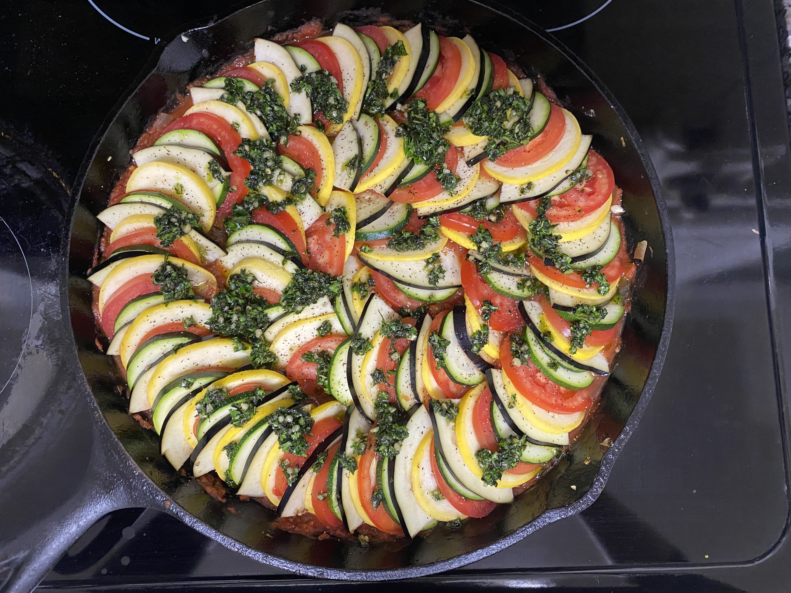
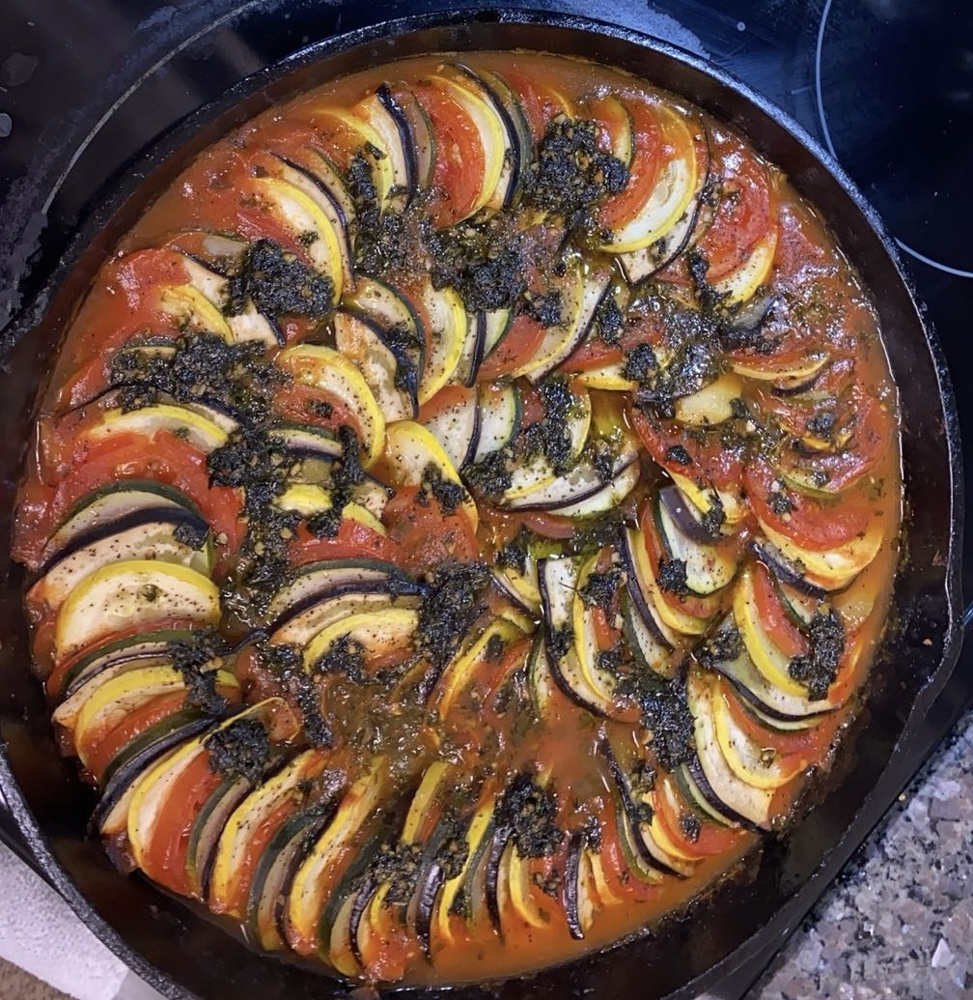

Ratatouille


As Gusteau once said, "anyone can cook!" This recipe will
transport you to the Disney movie Ratatouile, or maybe to
France.
This gorgeous and flavorful recipe captures the essence of
summer with its medly of fresh vegetables and aromatic herbs.
Simple yet elegant, this dish is health and a delicious way to
enjoy fresh produce.
Ingredients
Veggies
- 2 eggplants
- 6 roma tomatoes
- 2 yellow squashes
- 2 zucchinis
Sauce
- 2 tablespoons olive oil
- 1 medium white onion, diced
- 4 cloves garlic, minced
- 1 red bell pepper, seeded and diced
- 1 yellow bell pepper, sedded and diced
- kosher salt, to taste
- freshly ground black pepper, to taste
- 28 oz crushed tomatoes
- 2 tablespoons thinly sliced fresh basil
Herb Seasoning
- 2 tablespoons thinly sliced fresh basil
- 1 teaspoon minced garlic
- 2 tablespoons finely chopped fresh parsley
- 2 teaspoons fresh thyme leaves
- koshr salt, to taste
- freshly ground black pepper, to taste
- 4 tablespoons olive oil
Steps
- Preheat the oven for 375 F (190 C).
- Using a sharp knife or a mandoline, slice the eggplant,
tomatoes, squash, and zucchini into approximately 1/18-inch
(1-mm)-thick rounds, then set aside.
- Make the sauce: Heat the olive oil in a 12-inch (30-cm)
oven-safe pan over medium-hgih heat. Saute the onion,
garlic, and bell peppers until soft, about 10 minutes.
Season with salt and pepper, then add the crushed tomatoes.
Stir until the ingredients are fully incorporated. Remove
from heat, then add the basil. Stir once more, then smooth
the surface of the sauce with a spatula.
- Arrange the veggies in alternation slices, (for example, eggplant,
tomato, squash, zucchini) on top of the sauce, working from the o
uter edge to the center of the pan. Season with salt and pepper.
- Make the herb seasoning: In a small bowl, mix together the basil,
garlic, parsely, thyme, salt, pepper, and olive oil. Spoon the herb
seasoning over the vegetables.
- Cover the pan with foil and bake for 40 minutes. Uncover, then
bake for another 20 minutes, until the vegetables are softened.
- Serve hot as a main dish or side. The ratatouille is also
excellent the next day-cover with foil and reheat in a 350 F oven
for 15 minutes, or simply microwave to desired temperature.
- Enjoy!
Home